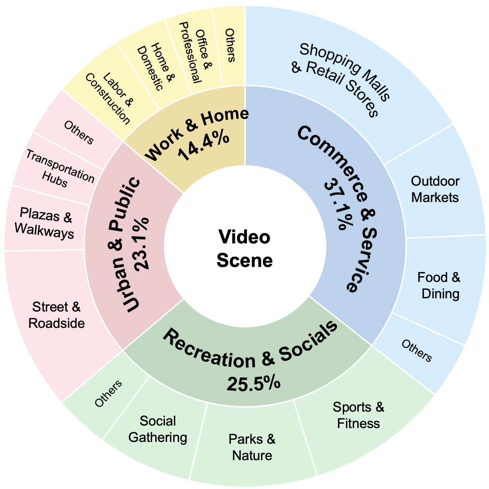

Question & Video Taxonomy
Causal Explanation
Questions asking why an event occurred or how a mechanism unfolded.
Counterfactual Reasoning
Questions inferring what would happen if a key causal element were altered.
Predictive Anticipation
Questions predicting the most probable immediate outcome of an ongoing event.
Inferential Description
Questions inferring implicit attributes or states such as roles, intentions, or emotions.

Distribution of question types and subcategories

Distribution of video scene categories